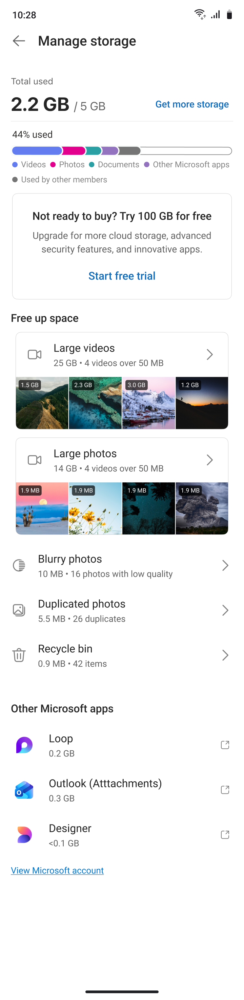
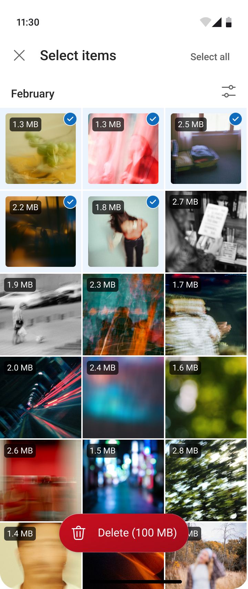
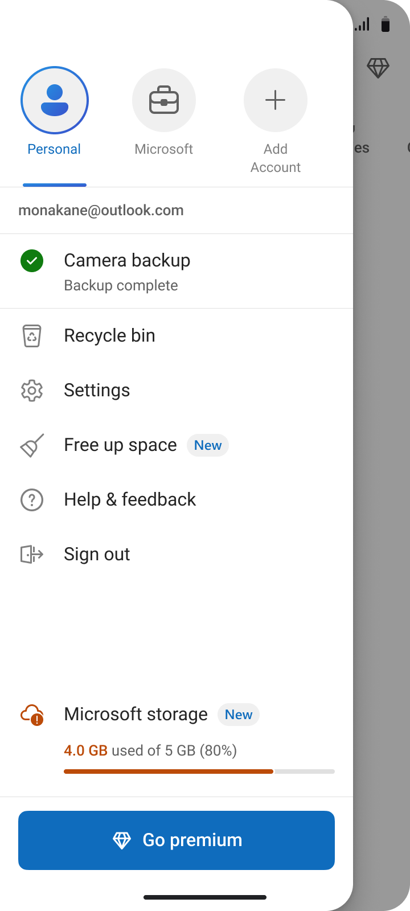
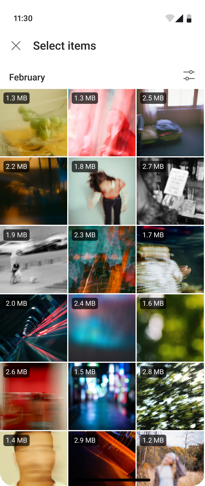
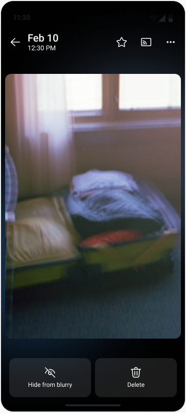
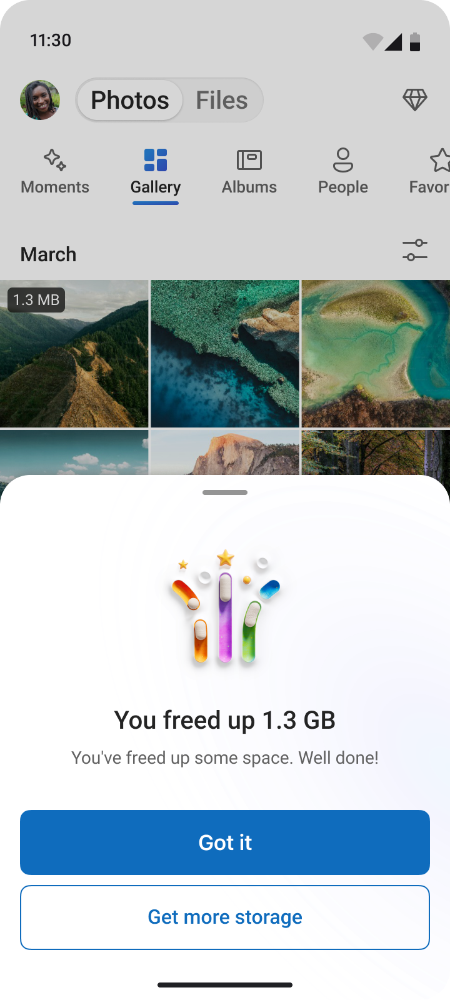

OneDrive Photo Clean Up
A unified Manage Storage hub for OneDrive mobile — giving users one place to understand their quota, see what's consuming space, and take action to free it up.


Full storage, no clear next step
Users running out of storage had no clear path forward. The goal: "Give user one place to understand quota, see upsell/upgrade options, and free up space." Previously, cleanup tools were buried in settings, quota was explained without helping users act, and there was no intelligent guidance on what was actually safe to delete.
The primary entry point — tapping the quota bar in the app drawer showing "4.0 GB used of 5 GB (80%)" — had nowhere meaningful to go. The storage breakdown (OneDrive, Videos, Documents, Loop, Outlook Attachments) was invisible to users at the moment they most needed it.
Make space without losing confidence
Designed a unified Manage Storage hub with AI-assisted cleanup categories — Large videos, Large photos, Blurry photos, and Duplicate photos — with a preview-first deletion flow and clear space-recovered feedback. Entry point: tapping the quota bar in the OneDrive app drawer.
Try the interaction
Local previewSelect blurry photos, review the running size total, and open or cancel the confirmation sheet.
The demo loads only from this device on localhost.
From storage pressure to a clear action




Designing for trust
- Preview before delete, always. Every cleanup category shows individual file sizes and requires explicit selection before deletion. The confirmation reads "They will be moved to the recycle bin" — not permanently deleted. This was the single most important trust mechanism.
- Reframed to "Free Up Space" language. Task-oriented language that met users at their goal, not the system's model of storage management. "Free Up Space" vs "Manage Storage" tested significantly better in comprehension.
- Category cards over raw file lists. Surfacing "Large videos (25 GB / 4 videos)" is more actionable than a flat file list. Users immediately understand the highest-impact cleanup action without digging.
- Upsell embedded, not interruptive. "Not ready to buy? Try 100 GB for free" lives at the bottom of the hub — present at the moment of storage awareness, but never blocking the cleanup flow.
- Designed around Graph API constraint. "The Graph API isn't available for consumers just yet" — the hub design was scoped to what was technically available for V1, with storage breakdown architecture designed to expand as API coverage grew.
Working across design and ML
Collaborated with design partners on the core experience and active explorations. Worked with PM, ML/Engineering on blurry photo detection thresholds and Graph API constraints. Led dogfood validation across iOS and Android before broader rollout.
What we delivered and learned
- Designed end-to-end Manage Storage hub — from quota bar entry to "You freed up 1.3 GB" success state
- 54% precision / 28.6% recall on blurry photo detection — accepted tradeoff to ship UX learning before ML matures
- ~100 dogfood users validated flow on iOS + Android
- Blurry photos (10 MB / 16 items), Duplicates (5.5 MB / 26 items), Large photos (14 GB), Large videos (25 GB) — real cleanup opportunities surfaced per user
- Integrated "Try 100 GB free" upsell at peak storage-awareness moment